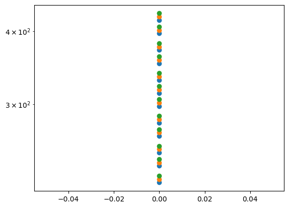

Sensi - Udito#
#
%reset -f
import numpy as np
import matplotlib.pyplot as plt
# Pythagorean integer scale
f0 = 220
p_ratio = 3./2.
twelve, n_octaves = 12, 3
n_tones = n_octaves * twelve
f_pyth, fv_pyth = f0, [ f0 ]
for i in np.arange(n_tones-1):
f_pyth = p_ratio * f_pyth
if ( f_pyth > 2*f0 ):
f_pyth /= 2
fv_pyth += [ f_pyth ]
# print(fv)
plt.figure()
for i in np.arange(n_octaves):
plt.semilogy(np.zeros(twelve), fv_pyth[i*twelve:(i+1)*twelve], 'o', color=plt.cm.tab10(i))

# 12 equal temperament
delta = 2.**(1./12.)
f0 = 220
fv_t = f0 * delta**(np.arange(12))
print(fv_t)
[220. 233.08188076 246.94165063 261.6255653 277.18263098
293.66476792 311.12698372 329.62755691 349.22823143 369.99442271
391.99543598 415.30469758]
Regole di somma e differenza armoniche#
\[A(t) = a_1 \cos(\Omega_1 t) + a_2 \cos(\Omega_2 t + \phi)\]
\[\begin{split}\begin{aligned}
A(t) & = a_1 \cos(\Omega_1 t) + a_2 \cos(\Omega_2 t + \phi) = \\
& = \\
\end{aligned}\end{split}\]
om0 = 1.
om1 = 1.5 * om0
phi = 25. * np.pi / 180.
a0, a1 = 1., 1.
afun = lambda t: a0 * np.cos(om0*t) + a1 * np.cos(om1*t+phi)
dt = .1
tv = np.linspace(0,1000,1001) * dt
print(tv)
plt.figure()
plt.plot(tv, afun(tv))
[ 0. 0.1 0.2 ... 99.8 99.9 100. ]
[<matplotlib.lines.Line2D at 0x7f8343030250>]